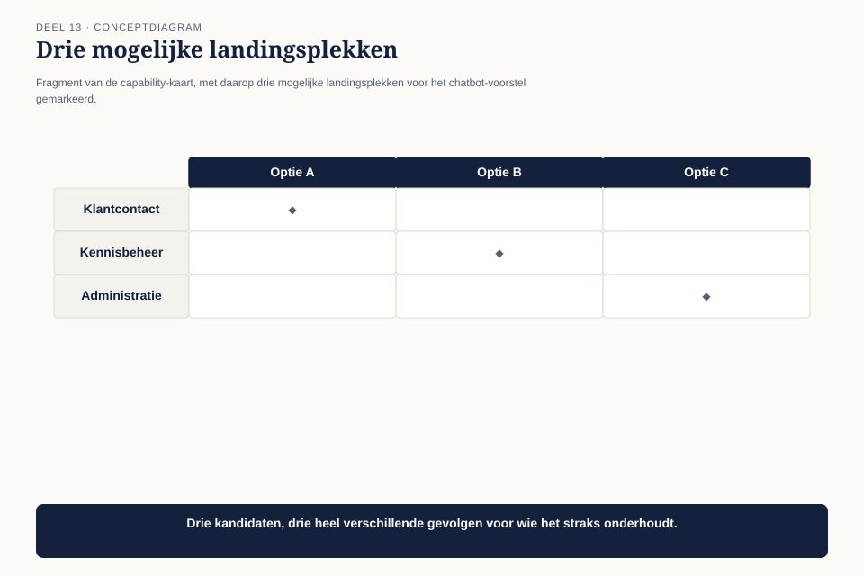
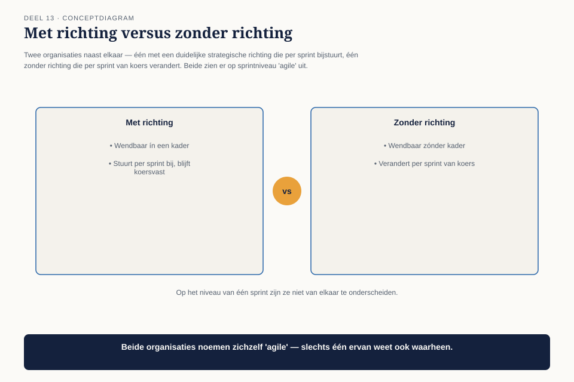
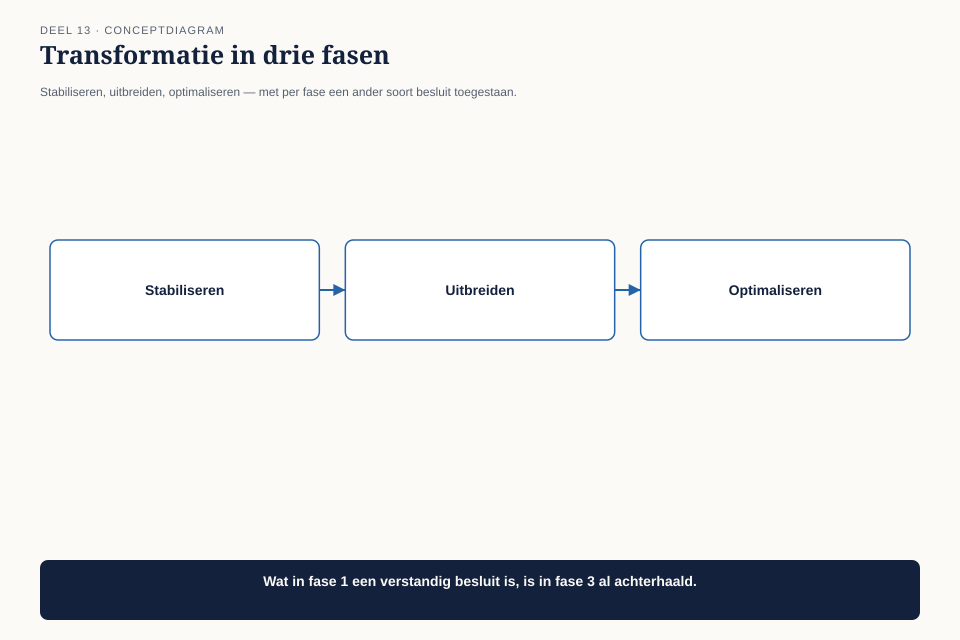

Deel 13 — Digital Business
Niveau 2 — Engagement, waarde en specialisatie | Deelnemersreader BTABoK-cursus, Ductus
13.1 Waar dit deel over gaat
Digital Business bevat vijf onderdelen: strategie, wendbaarheid, businessmodellen, business capabilities, en transformatie. Dit deel behandelt ze rond één terugkerende vraag in elk programma: wanneer is een goed idee ook een goed idee om nú te bouwen?
Aan het eind van dit deel kun je:
- een capability-kaart lezen en gebruiken om te bepalen of een voorstel bestaande capaciteiten versterkt, uitbreidt, of er helemaal buiten valt;
- het verschil toepassen tussen strategische wendbaarheid en ongeplande koerswijziging;
- een transformatie in fasen opdelen in plaats van als big bang te behandelen.
13.2 Het idee van Team Communicatie
Team Communicatie — hetzelfde team uit deel 12 — komt met een enthousiast voorstel: een chatbot die deelnemers in natuurlijke taal vragen laat stellen over hun pensioensituatie. Het idee is goed uitgewerkt, technisch haalbaar, en het team wil er de volgende sprint mee beginnen.
Claudette stelt één vraag voordat ze verder gaat: “Welke capability van Meridiaan versterkt dit?” Het team heeft geen antwoord. Het idee ontstond niet uit een bedrijfsbehoefte maar uit enthousiasme over een technologie die het team interessant vindt — dezelfde valkuil als “iets met AI doen” uit deel 6 (niveau 1), nu op programmaniveau.

Dit is geen afwijzing van het idee. Het is de vraag die eerst beantwoord moet worden.
13.3 De capability-kaart
Business capabilities beschrijven wat een organisatie kan doen, los van hoe ze het doet of welke afdeling het uitvoert. Meridiaan heeft, uit eerder werk in het EA-traject van de organisatie ↗, een capability-kaart: een overzicht van wat het bedrijf kan, van “deelnemer informeren” tot “uitkering berekenen” tot “vergunning aantonen aan toezichthouder.”

Het instrument: de capability-fit-toets. Voor elk nieuw voorstel, drie vragen in volgorde:
- Versterkt dit een bestaande capability? Het voorstel maakt iets dat het bedrijf al doet, beter, sneller of goedkoper.
- Breidt dit een bestaande capability uit? Het voorstel voegt iets toe aan een bestaande capability dat er nog niet was, maar wel logisch bij hoort.
- Creëert dit een nieuwe capability? Het voorstel introduceert iets dat het bedrijf nog niet kon.
Bij het chatbotvoorstel blijkt het antwoord, na het gesprek, “2”: het versterkt niet direct “deelnemer informeren” (dat kan al, via de simulatie en het portaal), maar het breidt de capability uit met een nieuw kanaal. Dat is een legitieme uitbreiding — maar het antwoord had eerst gevonden moeten worden vóórdat het team ermee begon, niet erna.
Waarom dit ertoe doet. Een voorstel dat categorie 3 blijkt (een geheel nieuwe capability) hoort niet bij één team te worden besloten, ongeacht hoe goed het idee is — dat is een strategische keuze die het niveau van één sprint overstijgt. Categorie 1 en 2 kunnen vaak wél door het team zelf worden opgepakt, mits de fit is vastgesteld.
13.4 Strategische wendbaarheid versus koerswijziging zonder koers
De tweede competentie — agility — wordt in de praktijk vaak verward met “snel van gedachten veranderen.” De BoK behandelt wendbaarheid als iets specifieker: het vermogen om te reageren op verandering binnen een heldere strategische richting, niet in plaats daarvan.

Het verschil: wendbaarheid veronderstelt een richting waarbinnen je snel beweegt. Zonder die richting is snelle verandering geen wendbaarheid maar stuurloosheid, en die twee zien er op het niveau van één sprint identiek uit. Het chatbotvoorstel van Team Communicatie ís wendbaar handelen — mits het capability-fit-antwoord bevestigt dat het binnen de richting van Meridiaan past. Zonder die toets is het niet te onderscheiden van een team dat gewoon doet wat het leuk vindt.
13.5 Transformatie in fasen
De laatste competentie in dit deel gaat over hoe een verandering als Mutatieplatform zelf wordt ingedeeld. Een transformatie die als één groot ontwerp wordt behandeld — alles tegelijk, alles in samenhang — loopt bijna altijd vast op de complexiteit van vijf teams die tegelijk moeten schakelen.

| Fase | Wat er gebeurt | Welk soort besluit past hier |
|---|---|---|
| Stabiliseren | de kernfunctionaliteit werkt betrouwbaar | kleine, laag-risico verbeteringen; geen nieuwe capabilities |
| Uitbreiden | bewezen kernfunctionaliteit krijgt nieuwe kanalen en varianten | categorie 2-voorstellen (uitbreiding van bestaande capabilities) |
| Optimaliseren | het geheel wordt efficiënter en samenhangender | categorie 1-voorstellen (versterking); nieuwe capabilities (categorie 3) alleen na expliciete heroverweging van de programmascope |
Mutatieplatform bevindt zich, op het moment van het chatbotvoorstel, nog in de stabiliseringsfase — het rekendatumprobleem uit deel 12 is daar het bewijs van. Een categorie-2-voorstel als de chatbot past beter in de volgende fase. Dat is geen njet, maar een timingvraag: hetzelfde voorstel, drie maanden later, in de juiste fase, is een heel ander gesprek dan hetzelfde voorstel nu.
13.6 Het gesprek met Team Communicatie
Claudette gaat niet terug met een afwijzing. Ze legt de capability-fit-toets en de fasering naast elkaar: het idee is een legitieme categorie-2-uitbreiding, maar het programma zit nog in de stabiliseringsfase. Ze stelt voor het voorstel vast te leggen — niet te laten vallen — met een concrete trigger voor wanneer het weer wordt opgepakt: zodra de twee resterende breukpunten uit de klantreiskaart (deel 12) zijn gesloten.
Dat is opnieuw hetzelfde patroon als het besluitenlogboek uit niveau 1: niet het idee begraven, maar het vastleggen met een expliciet heroverwegingsmoment.
13.7 Kernbegrippen
| Begrip | Betekenis in deze cursus |
|---|---|
| Capability-fit-toets | drie vragen in volgorde: versterkt, breidt uit, of creëert dit een capability? |
| Wendbaarheid versus stuurloosheid | wendbaarheid is snel bewegen binnen een richting; zonder richting is snelheid stuurloosheid, ook al ziet het er hetzelfde uit |
| Transformatie in fasen | stabiliseren, uitbreiden, optimaliseren — elke fase staat een ander soort besluit toe |
Volgende deel: deel 14 — Digital Employee en Digital Operations. Vijf teams, vijf verschillende culturen en ritmes — en de vraag hoe snel, eenvoudig en meetbaar het programma daadwerkelijk levert.